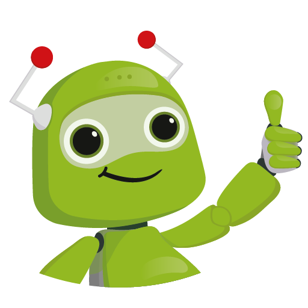

Знакомство с правилом @keyframes
С помощью @keyframes можно создавать анимацию на HTML странице
Объявление ключевого кадра в CSS3 имеет следующую форму
@keyframes название_анимации {
from {
/* начальные значения свойств CSS */
}
to {
/* конечные значения свойств CSS */
}
}
После ключевого слова @keyframes идет имя анимации. Затем в фигурных скобках определяются как минимум два ключевых кадра. Блок после ключевого слова from объявляется начальный ключевой кадр, а после клюевого слова to в блоке определяется конечный ключевой кадр. Внутри каждого ключевого кадра определяется одно или несколько свойств CSS, подобно тому, как создается обычный стиль.
Основные свойства для работы с анимацией
- animation-name. Чтобы создать анимацию к элементу, у него в стиле нужно добавить свойство animation-name. Значение этого свойства - название применяемой анимации.
- animation-duration - задает время анимации в секундах или миллисекундах.
- animation-iteration-count определяет, сколько раз будет повторяться анимация (3, infinite).
- animation-delay можно определить время задержки анимации.
- animation-timing-function - плавность выполнения ани мации:
- linear: линейная функция плавности, изменение свойства происходит равномерно по времени
- ease: функция плавности, при которой анимация ускоряется к середине и замедляется к концу, предоставляя более естественное изменение
- ease-in: функция плавности, при которой происходит только ускорение в начале
- ease-out: функция плавности, при которой происходит только замедление к концу
- ease-in-out: функция плавности, при которой анимация ускоряется к середине и замедляется к концу, предоставляя более естественное изменение
- cubic-bezier: для анимации применяется кубическая функция Безье
- animation - сокращенный способ определения вышеописанных свойств
.rect img{
width: 80px;
height: 80px;
/* animation-name: rectangle;
animation-duration: 5s;
animation-iteration-count: infinite;
animation-delay: 2s;
animation-timing-function: ease; */
animation: rectangle 5s infinite 2s linear;
}
@keyframes rectangle {
0%{
margin-left: 0px;
margin-top: 0px;
}
25%{
margin-left: 200px;
margin-top: 0px;
}
50%{
margin-top: 400px;
margin-left: 200px;
}
75%{
margin-left: 0px;
margin-top: 400px;
}
100%{
margin-top: 0px;
margin-left: 0px;
}
}

Примеры
Изменение цвета у кубика. Реализовано с помощью трех ключевых кадров:
- 0% - синий цвет
- 50% - промежуточный оранжевый цвет
- 100% - зеленый цвет
@keyframes change-background {
0% {
background: blue;
}
50% {
background: orange;
}
100% {
background: green;
}
}
.box {
animation: change-background 4s linear infinite ;
}
Изменение размера изображения и его мигание:
При создании данной анимации были использованы свойства:
- box-shadow - эффект мигания (подсвечивания) изображения
- border-radius - мигающая рамка вокруг изображения
- margin-top - перемещение изображения вниз
- margin-left - перемещение изображения влево
.changeSize img{
width: 80px;
animation: change-size-img 3s 1s infinite;
}
@keyframes change-size-img {
0%{
margin-top: 0px;
margin-left: 0px;
box-shadow: 0 0 0 0 rgba(25, 228, 167, 0);
border-radius: 50%;
}
70% {
border-radius: 50%;
box-shadow: 0 0 0 10px rgba(125, 241, 203, 0.4);
}
100%{
margin-top: 200px;
margin-left: 100px;
width: 200px;
box-shadow: 0 0 0 0 rgba(25, 248, 144, 0);
border-radius: 50%;
}
}
Плавное изменение прозрачности
Для добавления анимации прозрачности необходимо работать с ключевыми кадрами и свойством opacity
.opacity-img img{
width: 350px;
animation: opacity-img 5s infinite;
}
@keyframes opacity-img {
0% {
opacity: 1;
}
25% {
opacity: 0.6;
}
50% {
opacity: 0.1;
}
75% {
opacity: 0.6;
}
100% {
opacity: 1;
}
}
Плавный поворот изображения
.rotate-img img{
width: 250px;
animation: rotate-img 5s infinite;
}
@keyframes rotate-img {
0%{
transform: rotate(0deg);
}
50%{
transform: rotate(180deg);
}
100%{
transform: rotate(360deg);
}
}

Заданиe1
Попробуй реализовать движение кнопки следующим образом
Заданиe2
Попробуй реализовать движение кубика следующим образом
Заданиe3
Попробуй реализовать анимацию фона следующим образом